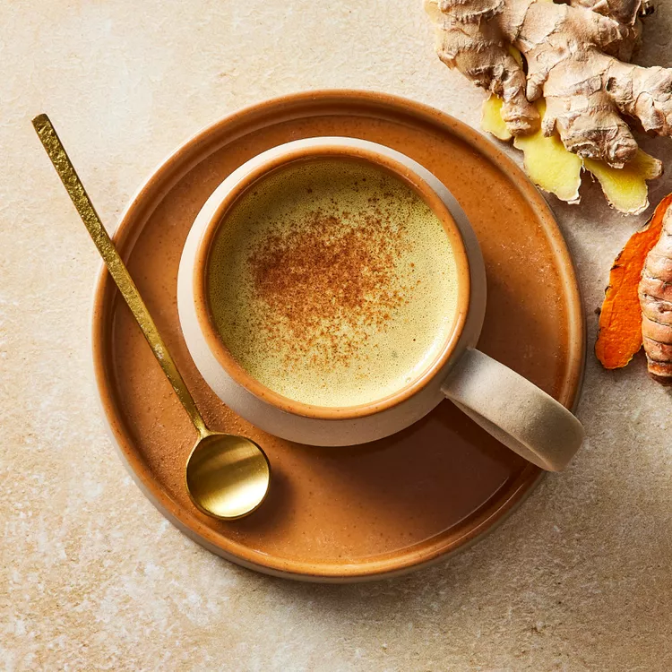

Turmeric Latte
Studies on turmeric's health benefits, particularly for reducing inflammation, are preliminary but promising. Try this vegan turmeric latte made from steamed almond milk and sweetened with a touch of maple syrup.
Preparation time
- Total: Approximately 20 minutes
- Preparation: 15 minutes
Ingredients
- 1 cup unsweetened almond milk or coconut milk beverage
- 1 tablespoon grated fresh turmeric
- 2 teaspoons pure maple syrup or honey
- 1 teaspoon grated fresh ginger
- Pinch of ground pepper
- 1 pinch Ground cinnamon for garnish
Instructions
- step1: Combine milk, turmeric, maple syrup (or honey), ginger and pepper in a blender..
- step2: Process on high until very smooth, about 1 minute. Pour into a small saucepan and heat over medium-high heat until steaming hot but not boiling.
- step3: Transfer to a mug. Garnish with a sprinkle of cinnamon, if desired.
- step4(enjoy): Now enjoy this and make your body strong.
Nutrition
The table below shows nutritional values per serving without the additional fillings.
| Calories | 70kcal |
|---|---|
| Carbs | 11g |
| Protein | 1g |
| Fat | 3g |